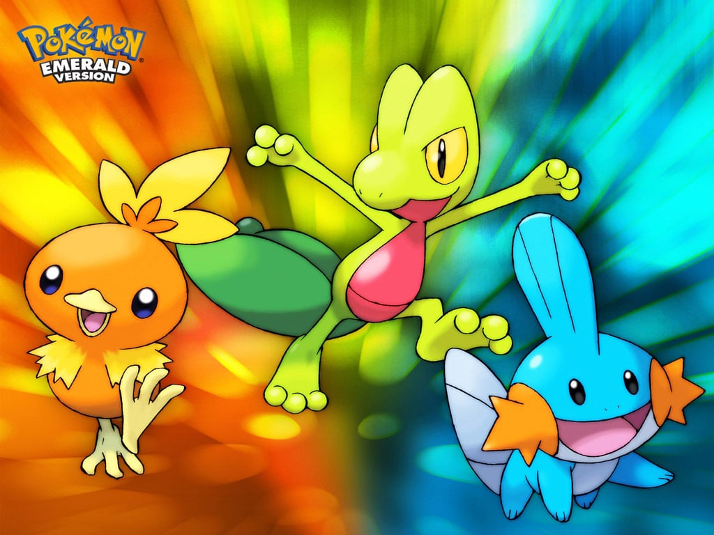
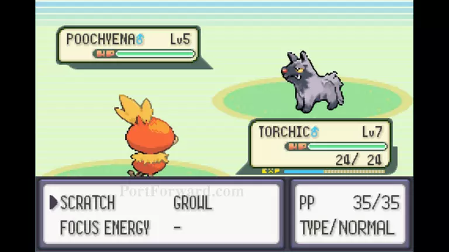
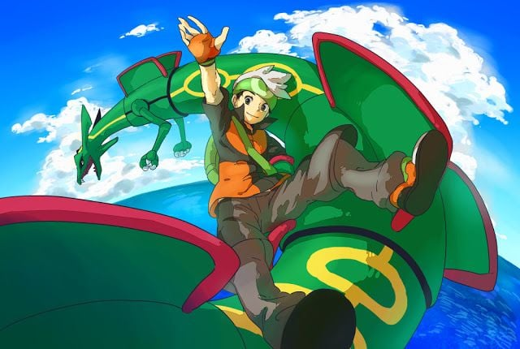
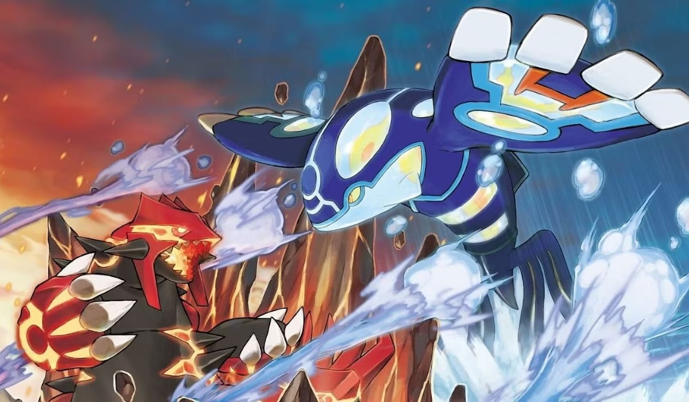
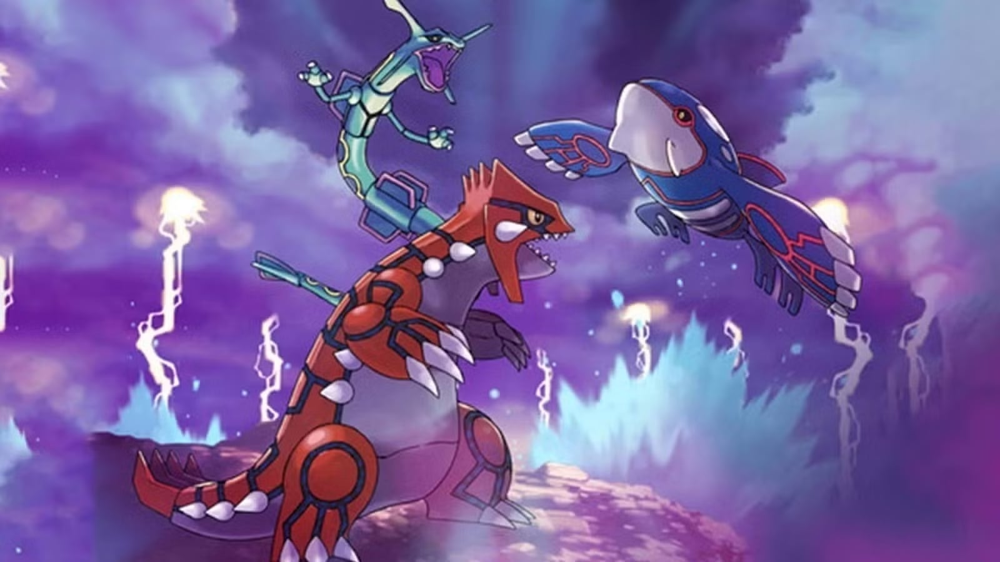

Pokémon Emerald: Ang Nakatagong Isyung Panlipunan sa Likod ng Mapayapang Laro
Ang Pokemon Emerald ay isang role-playing game na umiikot sa pakikipagsapalaran sa Hoenn Region, paghuli ng mga parang halimaw na alaga na tinatawag na Pokemon, na tumutulong sa manlalaro sa pagtalo sa ibang mga Pokemon Trainers, at sa kalaunan ay pagtalo sa mga Gym Leaders, at sa huli, ang Champion ng Pokemon.


Ang laro ay napakasaya, dahil mayroong malawak na iba't ibang Pokemon na mapagpipilian, na nagbibigay sa akin ng mga pagpipilian upang bumuo ng aking sariling koponan. Ako rin ay nagmamahal sa pakikipagsapalaran at paglalakbay sa mga lugar, habang tumatalo ng mga trainer sa daan.
Ang pinakanakakahimok na bahagi ng Pokemon Emerald ay ang kwento sa likod ng dalawang Legendary Pokemon, ang Kyogre at Groudon, kung saan ang dalawang masasamang organisasyon ay gustong kumuha ng kontrol sa kanilang kapangyarihan upang matugunan ang kanilang mga pangangailangan. Ang masamang organisasyon na Team Aqua ay gustong humuli kay Kyogre upang ilagay ang buong Hoenn Region sa ilalim ng tubig, habang ang Team Magma ay gustong gumamit kay Groudon upang lumikha ng mas maraming lupa. Ang manlalaro ay kailangang huminto sa dalawang organisasyong ito mula sa paggawa ng mga krimeng ito.


Korupsyon
Ang Team Aqua at Team Magma ay mga tiwaling organisasyon na lumalabag sa mga batas, nagre-recruit ng mga madaling maapektuhang tao, at gumagamit ng direktang pwersa upang makamit ang kanilang mga layunin. Ang datos ay nagpapakita na ang mga matitinding organisasyon ay madalas na nagreresulta sa sabotahe, pilit na pagre-recruit, at pagwasak ng ari-arian (Spadaro, 2020).

Pang-aabuso ng mga Hayop
Ang mga Pokemon ay hinuhuli, itinatago sa maliliit na lalagyan, at pinipilit sa labanan para sa dominasyon ng organisasyon at kita. Ayon sa ASPCA Shelter & Cruelty Statistics, ang mga hayop taun-taon ay nagdurusa mula sa instrumentalization ng tao, tulad ng mga iligal na blood-sports at komersyal na trafficking kung saan ang mga hayop ay itinuturing na mga itinatapon na gamit.

Pagkasira ng Kapaligiran
Ang pangunahing salaysay ay umiikot sa mga pagsisikap ng tao na manipulahin ang mga likas na pwersa tulad ng Groudon at Kyogre, na nagreresulta sa mga matitinding tagtuyot at baha sa rehiyon. Ayon sa Intergovernmental Panel on Climate Change (IPCC), ang pagpapahirap sa kapaligiran na dulot ng tao ay direktang nagdudulot ng malalang pagkagambala sa ekolohiya, pagwasak ng tirahan, at mga matitinding kaganapan sa panahon.
Kung paanong ang Team Aqua at Team Magma ay nagdudulot ng matitinding sukdulan sa panahon sa pamamagitan ng mga matitinding pamamaraan, ang mga modernong kaganapan sa totoong mundo tulad ng tumitinding init, nakakapinsalang pagbaha, at pagwasak sa kapaligiran ay nagmumula sa pagsasamantala. Ang laro ay nagbibigay-diin na ang sangkatauhan ay kailangang gumalang sa mga hangganang ekolohikal at magsanay ng balanse bago makarating sa hindi na mababagong pagwasak sa kapaligiran.